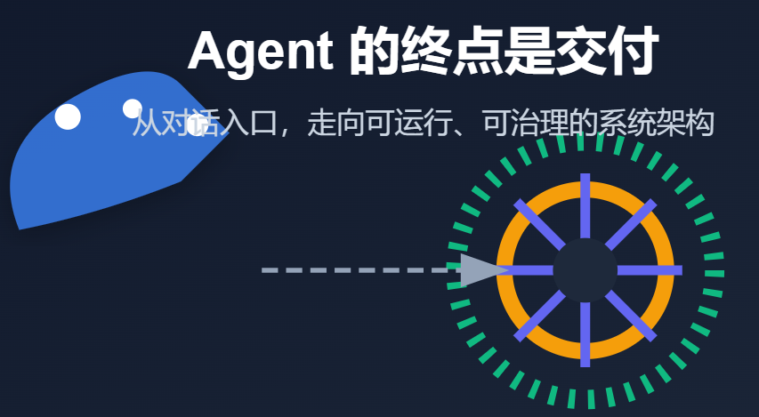

这两年 Agent 赛道最明显的变化，是大家不再满足于“能聊两句”。真正进入业务后你会发现：对话只是入口，交付才是终点。也正因为如此，讨论 Agent 时，越来越多人开始绕开“用了哪个模型”“提示词怎么写”，转而追问更硬核的问题——它到底是不是一套能长期跑起来、能控制风险、能持续扩展的系统？
如果把 Openclaw 当成一个产品来看，你会看到很多“功能点”；但如果把它当成一个底层架构来理解，你会看到它在回答另一类问题：如何让一个 Agent 像操作系统一样组织能力、调度工具、管理状态，并在约束中稳定地产出结果。
下面我们就按“系统设计逻辑”的视角，把 Openclaw 从架构哲学一路拆到关键实现。

一、为什么要从“底层架构”理解 Openclaw？
1.1 Agent 赛道的共识正在变化
过去一年，很多 Agent Demo 看起来很惊艳：能规划、会调用工具、能写代码、能跑流程。但真正落到团队里就会暴露三个老问题：
从「能对话」到「能完成复杂任务」：任务不是一次问答，而是一连串步骤、分支、校验、重试与收尾。
从 Demo 到系统级工程：做出一个效果不难，难的是让它稳定、可控、可维护，能让团队接得住。
当前 AI 应用的困境：很多产品试图做“万能应用”，把功能封在自家生态里，结果往往是：
工具集固化、扩展成本高；
数据在云端来回跑，安全与合规很难说清；
想“包办一切”，却又难以深入每个业务工具链的细节。
换句话说：Agent 的挑战正在从模型能力，转移到工程体系能力。
1.2 Openclaw 的独特之处
Openclaw 的思路更像“搭底座”，而不是“造一个全能 App”。
它不做“上帝应用”，而是把重点放在：如何灵活调用系统工具链的编排引擎。
它强调的不是“单一模型有多强”，而是：能力如何组合、如何扩展、如何治理。
它的核心理念可以浓缩成一句话： Agent ≠ 模型，而是一个持续运行的系统。
二、架构哲学：OS-as-Surface 与主权 AI
很多架构设计，表面看是技术选型，底层其实是价值取向。Openclaw 很典型：它先定“世界观”，再定“工程路线”。
2.1 操作系统即界面（OS-as-Surface）
一个很现实的问题：做 Agent，到底要不要把所有能力都重新实现一遍？
Openclaw 的回答很明确：不重复造轮子，拥抱现有工具链。
为什么不封装一堆内部库？
因为真正的生产力工具（ffmpeg、git、curl、python、各类 CLI）已经被反复打磨过，稳定、可控、可审计。把这些“系统级能力”拿来编排，比重造一套更靠谱。
CLI 优先的意义
CLI 天然具备可组合性：管道、重定向、退出码、stdout/stderr。对 Agent 来说，这些都是极好的“可观测信号”。
一个直观例子
处理音频，用 ffmpeg 就好。与其在 Agent 内部写一堆音频处理代码，不如让它学会“正确且安全地调用系统工具”。
OS-as-Surface 的意思并不是“只会跑命令”，而是：把操作系统当作能力表面，把工具链当作能力生态。
2.2 主权 AI（Sovereign AI）理念
如果说 OS-as-Surface 解决的是“能力来自哪里”，主权 AI 解决的就是“数据与控制权在哪里”。
数据尽可能留在用户手里；
本地优先的安全设计；
从“云端依赖”转向“本地自主”，企业才谈得上合规、审计、边界。
这点在今天尤其关键：很多团队并不缺模型，缺的是一套“可控的运行方式”。
2.3 架构设计的核心原则
把上面两点落成工程原则，大致会变成这些：
Agent 是“长期运行系统”，不是一次性调用；
架构优先于模型：模型会换，系统要站得住；
企业场景里，可控性往往比创造性更重要；
先工程化，再智能化：先把状态、权限、审计做扎实；
低耦合带来“自愈”和“进化”：某个工具坏了、某条路径失败了，系统能换路、能恢复、能继续跑。
三、整体架构总览：Openclaw 的分层式 Agent 操作系统
如果把 Openclaw 看作“Agent OS”，它的核心不是某个模块，而是分层清晰、职责明确。
3.1 六层架构设计
层级一：接口层（Interface Layer）
多端入口的抽象。你可以把它理解为“用户与系统交互的门面”，不绑死某一种前端形态。
层级二：感知与理解层（Perception Layer）
把各种输入变成系统可理解的事件：文本、结构化数据、事件流、甚至系统信号。
层级三：认知与决策层（Cognition Layer）
负责“想清楚怎么做”：规划、推理、策略选择、何时重规划。
层级四：执行与工具层（Action Layer）
负责“真的去做”：调用工具、编排 CLI、管理子进程、回传执行状态。
层级五：记忆与状态层（Memory & State Layer）
负责“持续性”：上下文管理、任务状态、可恢复、可并发。
层级六：治理与安全层（Governance Layer）
负责“边界”：权限、审计、风险防控、网络模型、工具白名单。
这六层组合在一起，才让 Agent 从“会说”变成“能跑起来”。
3.2 核心组件概览
Gateway（神经中枢）：基于 WebSocket 的全双工控制平面，用来做状态同步、事件流转、多端协同。
CLI 编排引擎：围绕子进程 spawn 与 stdio 管道，把系统工具链变成可被调度的能力。
可扩展插件体系：基于 Node.js（≥22）生态，支持多模型接入，也支持把能力做成插件挂上去。
这里有一个很重要的味道：Openclaw 把“控制平面”和“执行平面”分开了。前者负责协调，后者负责落地。
四、感知与理解层：让 Agent 真正“看懂”世界
很多 Agent 的问题不在“不会做”，而在“没看清”。输入如果是糊的，后面再强的推理也容易歪。
4.1 多模态输入统一抽象
Openclaw 更倾向于把输入统一成一种标准对象：标准化感知事件（Perception Event）。
来源可以是：
文本指令；
结构化数据（表单、JSON、数据库结果）；
事件流（任务进度、文件变化、进程输出）；
系统信号（退出码、错误流、超时等）。
统一抽象的价值在于：下游的规划、决策、治理不必关心“输入来自哪里”，只关心“这是什么事件、带了哪些证据”。
4.2 意图识别与上下文建模
在真实任务里，“意图”往往分两层：
显式意图：用户直接说要做什么；
隐式意图：用户没说，但从上下文能推出来，比如“更偏安全”“输出要可审计”“不要访问外网”。
Openclaw 的关键不在“靠一句 prompt 猜”，而在于：
维护短期对话上下文；
维护长期任务上下文（任务目标、约束、当前进度）；
通过 Gateway 做实时状态同步，让系统各部分对“现在处于什么阶段”有一致认知。
4.3 为什么 Openclaw 不依赖单一 Prompt？
因为 prompt 本质上是脆弱的：
不可控：同样输入，模型可能给不同路径；
不稳定：上下文一长就漂；
不易审计：出错时很难复盘“到底哪里理解错”。
所以 Openclaw 更偏向：结构化感知 + 轻模型协同。把关键约束与证据变成结构化对象，模型负责决策，但系统负责“把决策落在可控轨道里”。
五、认知与决策层：Openclaw 的“大脑中枢”
真正的“智能”不只在于会推理，更在于会规划、会调整、会在失败中继续前进。
5.1 Planner：任务拆解与路径规划
Openclaw 的规划逻辑更像工程调度：
用户目标 → 拆成子任务图（Task Graph）；
支持串行、并行、条件分支；
任务执行中可以 Re-plan：某条路不通就换路，而不是卡死。
这点非常“系统味”：它默认世界是不确定的，规划必须可变。
5.2 Reasoner：决策推理机制
Reasoner 更关注“在当前上下文里如何判断下一步”：
基于上下文做决策；
策略可以是规则、模型或混合；
对不确定性做处理：当信息不足时先去获取证据，而不是编造答案。
从架构角度看，这相当于把“推理”从一句 prompt 的黑箱里，拆成可插拔、可观测的模块。
5.3 多 Agent 协作机制
复杂任务往往不是一个 Agent 能做完的。Openclaw 支持多种 Agent 角色：
角色型 Agent：比如写作、分析、执行、审计；
能力型 Agent：对某类工具链更熟；
调度 Agent（Coordinator）：负责分派、合并结果、处理冲突。
WebSocket 总线让多端协作更顺滑：你可以理解为“一个可实时同步的控制平面”，大家围绕同一个任务状态工作。
六、执行与工具层：从“想清楚”到“真的去做”
很多系统在这里翻车：规划很漂亮，一执行就崩。Openclaw 的重心恰恰在“执行系统化”。
6.1 CLI 优先的执行哲学
执行层的核心是两件事：
子进程生成（spawn）机制：把工具当作外部可控执行单元；
stdio 管道通信：stdout/stderr/exit code 都是反馈信号。
这让 Agent 获得一种“系统级操作能力”：不是在模拟工作，而是在真的调度工具链干活。
6.2 Tool 抽象设计
在 Openclaw 里，Tool 更接近“能力单元”，而不是简单的 API 调用：
Tool 有明确的输入输出；
Tool 的副作用可描述（写文件、启动进程、修改环境）；
Tool 可以被编排，而不是只能单点调用。
这一步很关键：它让“工具”进入治理体系，变成可管理对象。
6.3 执行控制机制
一个可交付的执行系统必须回答这些问题：
同步还是异步？长任务怎么管？
失败怎么办？重试策略是什么？有没有回滚？
进度怎么回传？如何让上层决策知道“执行到了哪里”？
Openclaw 的设计里，执行状态回传是刚需，因为上层要据此做动态调整，而不是盲跑。
6.4 如何避免“工具幻觉”
工具幻觉是 Agent 落地的第一大坑：模型说“我执行了”，实际上没执行；或者参数乱填导致破坏性操作。
Openclaw 更偏工程化防线：
Tool 白名单：能调用哪些命令、哪些参数范围；
参数校验：不符合规范直接拒绝执行；
执行结果校验：不仅看“模型说成功”，要看退出码、输出内容、产物是否存在；
以 ffmpeg 为例：输入路径、输出路径、允许的编码参数、资源限制，都可以在边界内约束。
换句话说：让系统相信“证据”，而不是相信“说法”。
七、记忆与状态层：让 Openclaw 具备“连续性”
很多人以为 Agent 的连续性来自“对话历史”，但真正可交付的连续性，来自状态。
7.1 记忆的类型划分
Openclaw 更像把记忆分层处理：
短期记忆：当前对话、当前任务上下文；
中期记忆：任务历史、步骤结果、失败原因；
长期记忆：用户偏好、常用工具链、组织知识。
不同层级用不同存储与更新策略，避免“全塞进 prompt”带来的膨胀与漂移。
7.2 状态机设计
状态是可运行系统的骨架：
Agent 当前状态（空闲/执行/等待/中断/恢复）；
任务生命周期状态（创建/规划/执行/校验/完成/失败）；
异常与中断状态（超时、权限不足、工具不可用）。
Gateway 在这里的价值是“全局状态同步”：让多端、多 Agent 在同一份事实之上行动。
7.3 为什么“状态”比“对话历史”更重要
因为状态带来三件很实用的能力：
可恢复：断点续传，重启后继续跑；
可审计：知道每一步做了什么、为什么这么做；
可并发：多任务并行，而不是把一切挤进同一段对话。
对企业来说，这三件事往往比“回答得更像人”重要得多。
八、治理与安全层：企业级 Agent 必须回答的问题
Agent 一旦能调用系统工具链，它就不再是“聊天机器人”，而是一个“能动手的系统”。能动手，就必须能管住。
8.1 Loopback-First 网络模型
默认绑定 127.0.0.1 的思路很朴素：先把攻击面缩到最小。
当需要跨设备访问时，再用零信任方案去打通，比如 Tailscale 或 Cloudflare Tunnel。这样可以在“本地优先的安全”与“云端便利”之间做平衡。
8.2 行为边界控制
核心问题是：它能做什么，不能做什么？
动态权限模型：不同任务、不同环境、不同用户可给不同权限；
CLI 调用白名单：限制可执行的命令与参数；
对高风险操作可增加确认、审批或双重校验。
边界清晰，系统才敢放开用。
8.3 可观测性与审计
企业用 Agent，最怕“出了事说不清”。所以必须有：
决策日志：为什么选这条路径；
行为轨迹：每一步执行了什么；
工具调用记录：输入输出、退出码、耗时；
控制平面全链路追踪：通过 WebSocket 把事件串起来，方便复盘。
8.4 风险防控机制
常见风险基本绕不开：
Prompt 注入：让模型“越权”去做不该做的事；
工具滥用：把命令当武器；
数据安全与隔离：敏感数据不外泄；
子进程隔离：工具运行在边界里，降低影响面。
治理层不是“给模型加个免责声明”，而是用系统手段把风险落到可控范围。
九、架构对比：Openclaw vs 传统 AI 架构
把 Openclaw 放在传统 AI 应用旁边，会看到一种明显的重心转移：
维度 | 传统架构 | Openclaw |
核心理念 | 模型中心 | 系统中心 |
工具集成 | 封装内部 API | 直接调用 CLI |
扩展方式 | 插件式封装 | 编排式组合 |
安全模型 | 云端依赖 | 本地优先 |
协作方式 | 单 Agent | 多 Agent 总线 |
这张表背后真正的差异是：传统架构更像“智能功能”，Openclaw 更像“智能系统”。
十、从架构看 Openclaw 的自愈与进化能力
一个能落地的 Agent，不是永远不犯错，而是犯错后能继续交付。
10.1 低耦合带来的灵活性
当工具层与决策层解耦时：
换工具不必重写大脑；
换模型不必推倒执行系统；
某个插件挂了，不影响整体框架。
低耦合是“自愈”的前提。
10.2 Agent 自我编写脚本的能力
更有意思的是：当系统把 CLI 当作能力表面，Agent 在缺能力时就可能“长出能力”。
比如缺某个批处理功能，它可以：
在约束下生成脚本；
调用工具执行；
把脚本沉淀为可复用的工具单元。
这不是“炫技”，而是一种务实的扩展方式：先解决问题，再把解决方案固化为能力。
10.3 动态重规划机制
任务失败是常态：权限不足、环境差异、工具版本不同、输入数据异常……关键在于系统能否自动调整策略：
失败后找原因，决定重试还是换路；
环境变化时切换执行方案；
把失败经验沉淀进中期记忆与治理规则里。
这才叫“长期运行系统”。
十一、总结
把 Openclaw 拆到最底层，你会发现它并不是在追求“更会聊天”，而是在追求三件更难的事：
从“模型中心”走向“系统中心”；
从“单 Agent”走向“多 Agent 协作”；
从“好用”走向“可治理、可扩展、可交付”。
如果用一句话收尾： 真正的 Agent，不是更会说话，而是更会把事情办完。